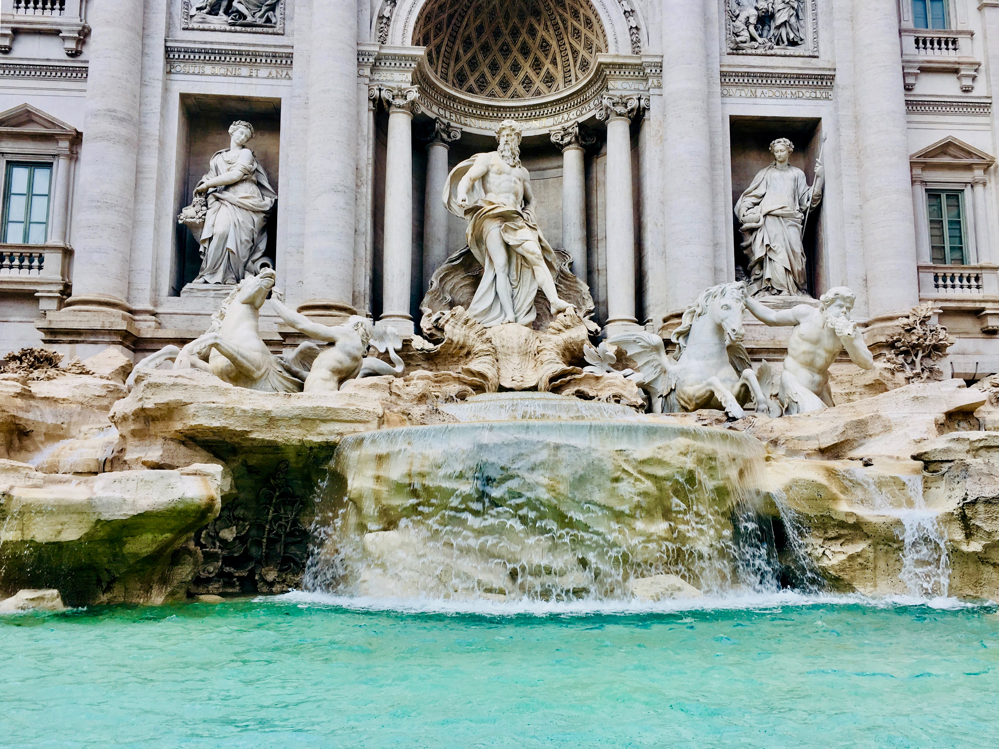

Cultural Heritage

According to UNESCO, the term heritage refers to buildings, places and objects that are considered valuable in order to be preserved over time and is divided into two categories: natural and cultural. More specifically, cultural heritage includes monuments, works of art and other everyday objects created by man and are timeless. Natural heritage includes the countryside, biodiversity and geodiversity and is the gift of nature. Obviously, these two aspects of heritage are closely linked as social heritage includes natural features with cultural features.
When a place is of great natural importance to the common heritage of mankind, in addition to attracting countless tourists and boosting the local economy, it can be inscribed on the UNESCO World Heritage List. The sites in this list are considered "natural heritage" for the following reasons:
The fact that UNESCO protects the heritage of many parts of the world shows its importance in a society. For this reason, all competent authorities and citizens must not neglect its protection, which is achieved in the following ways: